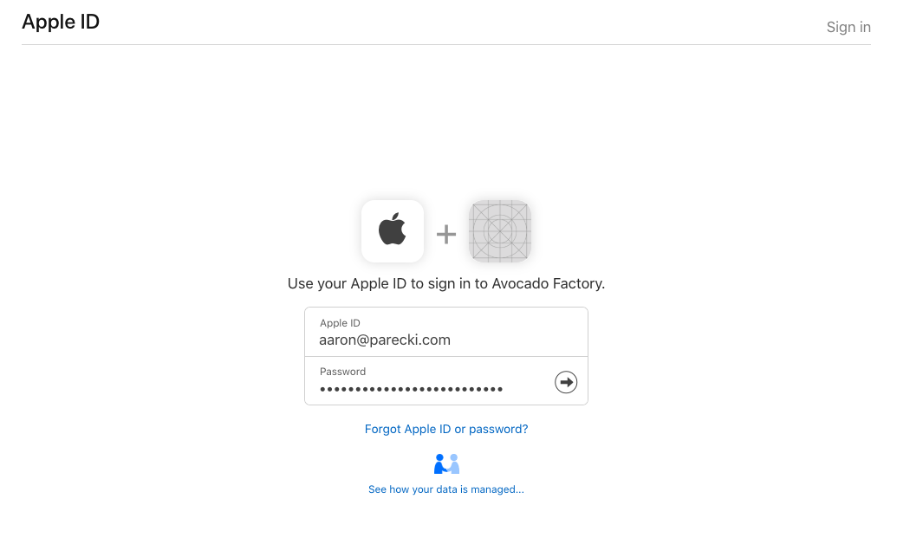
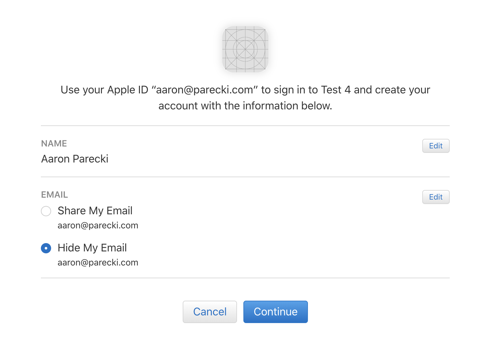
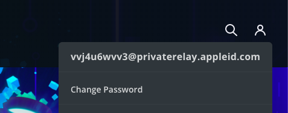
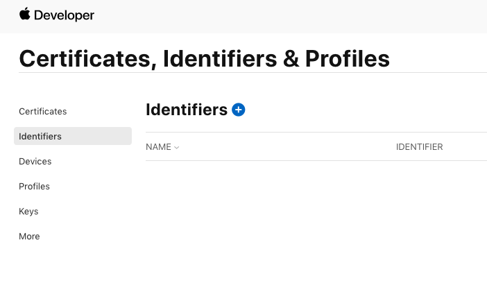
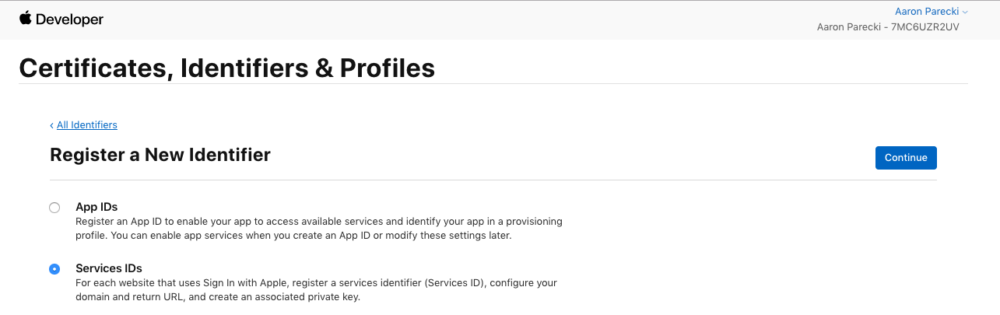

Tại sự kiện WWDC 2019, nhân dịp ra mắt iOS 13, Apple đã giới thệu một tính năng mới đó là cho phép người dùng đăng nhập bằng Apple ID (dễ hiểu hơn là tài khoản iCloud) thay vì bằng tài khoản Facebook, Google. Các bạn có thể tham khảo tại đây:
Theo như quảng cáo thì Apple hỗ trợ tính năng này trên nền tảng khác là Web, Android, Windows. Còn thực tế thế nào thì các bạn tìm hiểu. Ở đây, mình chỉ bàn đến việc hỗ trợ trên web thôi nhé.
Đầu tiên, bạn sẽ nhấn vào nút Sign in with Apple như hình bên dưới.

Tiếp theo, màn hình đăng nhập sẽ hiện ra. Có trường hợp khác là bạn sẽ thấy một hộp thoại (dialog/modal).
Nếu thiết bị bạn đang sử dụng là lần đầu tiên với các dịch vụ của Apple sẽ phải xác thực hai bước. Sau đó, ta sẽ thấy màn hình xác nhận thông tin và muốn hỏi bạn muốn bên phía nhà phát triển thấy được email hay không?
Và đây là kết quả nếu bạn chọn Hide my email.
Bây giờ ta sẽ vào phần viết code. Phần này sẽ có 3 bước, gồm cấu hình tại Apple's Developer Central Portal, xác thực tại phía Back-End và gắn nút đăng nhập tại Front-End.
Sau khi đăng nhập vào Portal, bạn chọn mục Certificates, IDs & Profiles.

Chọn tiếp Identifiers và nhấn vào dấu cộng màu xanh.

Trước tiên, bạn tạo App IDs để định danh app trước đã. Thông
tin này sẽ dùng cho phần Services ID phía sau.

Bạn chọn nền tảng, điền mô tả. Ở phần Bundle Id chọn là
Explicit. Giả sử tên web của bạn là example.com thì
tên của bundle nên là com.example. Sau đó thì nhấn nút
Continue và làm theo hướng dẫn.

Phần này bạn sẽ cần Apple ID Prefix sẽ là
team_id.
Đối với việc hỗ trợ đăng nhập trên web, bạn chọn Services ID ở trang trước.

Ở bước này, bạn sẽ điền tên của app và tên của identifier.
identifier sẽ là OAuth client_id. Nhớ đánh dấu
vào ô Sign in with Apple.
Nhấn nút Configure để bắt đầu xác thực tên miền.
Bây giờ đến phần khó chịu nhất trong việc cấu hình đó là xác thực tên miền. Nó
vẫn nằm trong bước tạo Service ID nhưng khá lằng nhằng nên mình
tách ra.
Bạn chọn Primary App ID là tên của App ID vừa tạo lúc nãy. Điền tên trang web của bạn vào phần Web Domain và không được có dấu xẹt ở cuối nhé. Còn phần Return URLs sẽ là phần xử lý callback sau khi Apple đã xác thực xong tài khoản, bên phía mình phải tự viết phần callback này.
Lưu ý chỗ này, Apple không hỗ trợ localhost lẫn địa chỉ IP. Nên
nhập tên miền đàng hoàng vào.

Nhập xong thì bạn khoan làm gì, hãy nhân nút Download để tải
file .txt về xác thực. Có thể lưu luôn ở bước này cũng được, miễn
là file .txt đó luôn là mới nhất và không được đổi lại tên.
Tiếp theo, bạn sẽ làm trò tà đạo gì đó tuỳ thuộc vào cách host trang web. Miễn
là upload file txt vừa tải về lên và truy cập được với cấu trúc
DOMAIN_NAME/.well-known/apple-developer-domain-association.txt

Sau khi thành công, bạn quay về màn hình Configuration lúc nãy để nhấn nút Verify.
Ở phần callback, Apple sẽ gửi cho bạn một token. Từ token này kết hợp với private key và một số thông tin để ra token mới. Cuối cùng gửi lại Apple để xác thực và lấy thông tin người dùng.
Để lấy được private key, bạn quay trở lại màn hình Certificates, Identifiers & Profiles, chọn mục Keys.

Điền Key Name và chọn Sign In with Apple.

Nhấn vào Configure và chọn App ID vừa tạo.

Apple sẽ tạo cho bạn một file mới với đuôi là p8. Lưu ý, file này
chỉ tạo MỘT LẦN.

Bạn quay lại màn hình để xem thông tin chi tiết của key vừa tạo, bạn sẽ cần
mục KEY ID để tạo token phía dưới client.

Ở phần cấu hình tại Apple Developer Portal, các bạn sẽ có những thứ sau:
TEAM_ID
CLIENT_ID
p8 với tên file là AuthKey_<TEAM_ID>.p8
KEY_ID
Quan trọng là nhớ verify domain với Apple nhé.
Phần này, công việc chỉ là gắn nút Sign In with Apple
Với cách làm này, bạn sẽ sử dụng style mặc định cho nút Sign In with Apple theo như trong HIG (Human interface guidelines). Sau khi bạn nhấn nút thì mặc định sẽ hiện lên một popup/dialog/modal. Bạn sẽ cần viết một số sự kiện đễ xử lý. Cái này làm theo bài viết Configuring Your Webpage for Sign in with Apple của họ.
Mình sẽ giải thích các tham số ở đây một tí:
CLIENT_ID - Lấy từ Apple Developer Portal.SCOPES - Giá trị nên là name email.
SCOPES=name email
REDIRECT_URI - Đường dẫn bạn đã khai báo ở phần
Return URLs ở bước Verify.
STATE - Cái này mình cũng không rõ ý nghĩa của nó lắm, có thể
hiểu như là một giá trị ngẫu nhiên mà chỉ session đó biết thôi.
Với cách này thì bạn thoải mái chỉnh sửa nút Sign In with Apple. Khi nhấn vào sẽ redirect tới trang đăng nhập.
Apple sẽ gửi một request với method là POST đến callback URL mà
bạn đã khai báo trước đó. Token chỉ có thời hạn là 5 phút. Với nội dung như
sau:
Lúc này, bạn sẽ cần tạo một JWT Token với các tham số đầu vào như sau. Lưu ý
là trường exp có thời hạn không được quá 6 tháng.
Sau đó, bạn sẽ dùng code từ Apple gửi về kèm với JWT token vừa
tạo, gửi một request method POST với ContentType là
application/x-www-form-urlencoded để xác thực token. Tham khảo
thêm tại
Generate and validate tokens.
Và đây là response trả vè của em nó. Bạn tha hồ làm gì làm nhé.
Đây là kinh nghiệm khi mình làm chức năng này. Ở đây chỉ cần đăng nhập chứ
không cần cấp lại token mới. Nếu cần thì bạn làm y chang bước verify rồi thay
bằng refresh_token và sửa grant_type từ
authorization_code thành refresh_token là được.
Hình ảnh cho phần cấu hình tại Apple Developer Portal mình lấy từ bài viết của Aaron Parecki do phần này đã được team iOS làm sẵn. Cảm ơn anh Tài Vương đã hõ trợ phần này.